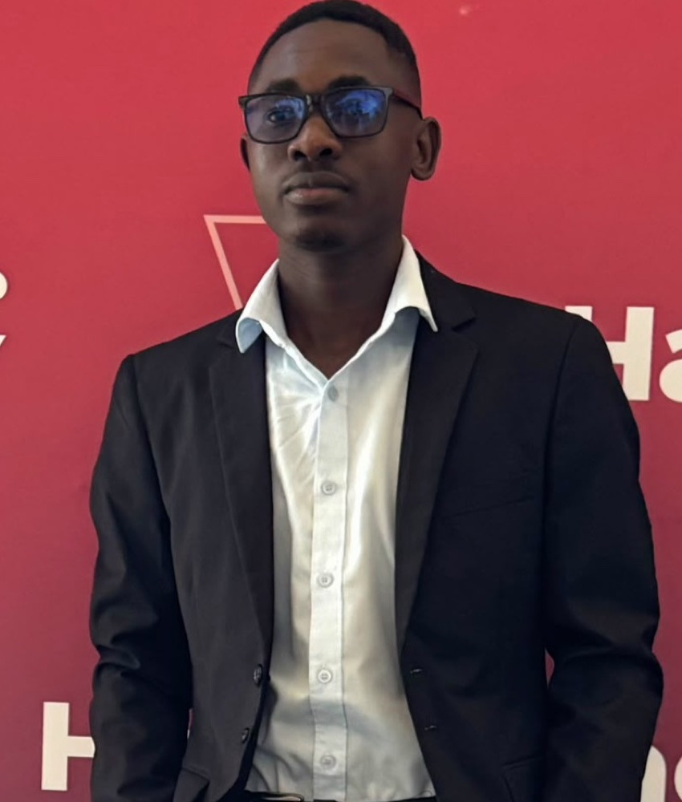

CurrentSpace for Giants · Kenya
Data & GIS Intern
Building a computer vision model that identifies collared elephants in camera-trap images, and a RAG tool that turns EarthRanger data into monthly reports.
I'm Orpheus Mhizha Manga, a software and machine learning engineer. I build backend services and APIs in Python, and take ML models from raw data to production, in the cloud and on low-power hardware in the field. Much of my work serves conservation and health in Africa, across NLP and LLMs, computer vision, reinforcement learning and edge AI.

Experience with
Three current roles that combine applied ML, research and conservation data.
Building a computer vision model that identifies collared elephants in camera-trap images, and a RAG tool that turns EarthRanger data into monthly reports.
Clinical NLP research. Co-author of a paper on grounded longitudinal clinical summarisation, accepted at Africa at NeurIPS 2026.
Building the datasets behind an African wildlife economy index, with documented sources so it can be reproduced and audited.
Software and ML projects built end to end: APIs, full-stack and mobile apps, and models deployed on real hardware.
Many conservation areas have no internet, so cloud-based detection doesn't work there. AlertReck listens for gunshots, chainsaws, vehicles and voices on a Raspberry Pi and sends a GPS-tagged SMS to rangers. No connection is needed.
A legal assistant that answers Rwandans' questions about their rights in plain language. It retrieves from 200+ indexed constitutional articles with bge embeddings and answers with Claude, streaming each response with source citations and a confidence score.
A custom Gymnasium environment in which a ranger drone patrols a 20×20 savanna grid, with an 847-dimensional observation space and a shaped reward. I compared DQN, PPO, A2C and REINFORCE over 40 hyperparameter runs. DQN performed best, with a mean reward of 50.5.
Curated and validated a 131,802-image camera-trap dataset across five classes, audited the labels, and showed how class imbalance distorts per-class metrics.
An Android app that lets farmers photograph a leaf and get an AI diagnosis of plant disease, with a marketplace, MTN Mobile Money payments and four languages.
A language model fine-tuned with LoRA/PEFT for legal document understanding, adapting a general model to a specialised domain.
A Django web app where farmers upload leaf photos and get instant disease predictions from a PyTorch CNN covering 38 diseases across 14 crops. It's built on REST API views and PostgreSQL, with an SMTP email gateway for notifications.
Recurrent neural networks that forecast air pollution from time-series data, covering preprocessing, sequence modelling and evaluation across pollutant categories.
Software, machine learning, research and data roles across Kenya, Rwanda and Zimbabwe.
Peer-reviewed work on clinical NLP and edge AI for conservation.
Co-author with the Rizivo Research Lab team, African Leadership University.
International Conference on AI Across Disciplines, Selçuk University. Publication pending.
Presentation certificateThe tools I use day to day, from backend services to model training and deployment.
A machine learning degree, backed by certifications and competition results.
Coursework: machine learning, deep learning, reinforcement learning, computer vision, data science, statistics and probability, and linear algebra and calculus for ML.
I'm looking for software engineering and machine learning engineering roles: backend, applied AI, NLP and LLMs. Based in Kigali, open to relocation or remote work.